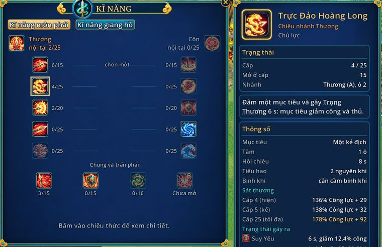

Cách học kĩ năng
- Phím
- Alt+R xem cây kĩ năng
- Học ở đâu
- Sư phụ ở căn cứ phái
- Điểm
- 1 điểm mỗi cấp, tối đa 150
- Tẩy điểm
- Cấp nhân vật × 1.000 lượng

Mỗi phái có hai nhánh, cây có 7 hàng. Mỗi hàng chọn chiêu nhánh trái hoặc nhánh phải, trộn hai nhánh được. Đứng gần sư phụ, mở Alt+R để học và nâng cấp chiêu.
- Hàng 1 tới 7 mở ở cấp 10, 15, 20, 30, 40, 45, 50. Học hàng sau cần có chiêu ở hàng trước.
- Thêm 3 chiêu chung (mở ở cấp 12, 25, 35) và 2 nội tại tự mạnh lên theo tổng cấp chiêu của nhánh.
- Cấp 1 của mọi chiêu chỉ tốn ngân lượng, không tốn điểm. Cấp chiêu tối đa tăng dần theo cấp nhân vật.
- Kéo chiêu xuống ô phím để dùng.
- Bảng nhân vật (Alt+W), nhóm Nội tại môn phái: xem nội tại đang cộng bao nhiêu. Nội tại tính lúc đánh (vd % sát thương) không làm đổi các dòng chỉ số khác.
- Tẩy điểm ở sư phụ: lần đầu miễn phí, sau đó mỗi lần tốn cấp nhân vật × 1.000 lượng (cấp 50: 50.000). Mỗi đợt làm lại chiêu phái, mọi người được thêm một lần tẩy miễn phí.
Chiêu trấn phái đã hiện trong cây nhưng chưa mở.
Số liệu chi tiết
- Cấp chiêu tối đa: cấp 1 khi vừa đủ cấp mở, rồi cứ thêm 3 cấp nhân vật được thêm 1 cấp chiêu, tới trần của chiêu.
- Tổng 150 điểm: một nhánh tối đa 110 (tính cả hàng 6, 7), chiêu chung 40.